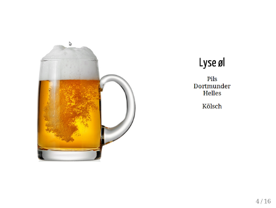
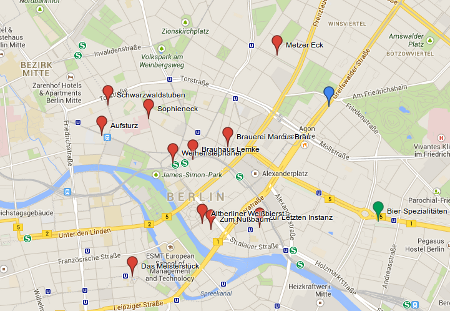

Deutsch Bier
En kort, praktisk guide til tysk øl
Slides

Ølkart

Slidene er laget i remark og ser best ut i webkit-baserte nettlesere. Trykk P for å se presentasjonsnotatene.
Ulike øltyper
Lys lager
- Vanlige typer: Pils, Dortmunder, Helles
- Den vanligste ølsorten i Tyskland, akkurat som i Norge
Kölsch
- Ale-type som stammer fra Köln
- Tysk svar på engelsk Pale Ale, fruktigere og mindre bitter enn pilsen
- Navnet er beskyttet, slik at bare øl fra områdene rundt Köln kan kalles dette
Schwarzbier
- Tysk for "svart øl" -- essensielt en mørkere variant av dunkel
- Navnet beskriver i utgangspunktet kun fargen, men disse ligger langt nærmere sine lyse lager-brødre enn de engelske porter og stout
- Ulikt pils, som gjerne kan være noe bitter, er disse ofte rundere og mildere humlet
Märzen / Oktoberfest
- Sterkt, vellagret øl, med farge av mørk kopper
- I tidlige tider, når det var stor fare for infeksjon ved brygging om sommeren, ble det brygget kraftig øl om våren (typisk i mars) som ble lagret på tønner i kalde kjellere, for å drikkes gjennom sommeren.
- Når oktober kom kunne en starte å brygge igjen, og alt dette "mars-ølet" måtte drikkes opp i en fei for å få plass til nytt øl.
Weizen
- Øl brygget med minst 50% hvete, noe som gir ølet en smooth og fruktig karakter, gjerne med estere av banan og liknende.
- Hefeweizen: Uklart og ufiltrert hveteøl ("hefe" betyr "gjær")
- Kristalweizen: Filtrert variant
- Dunkelweizen: Mørkt hveteøl
Bock
- Kommer opprinnelig fra Einbeck, adoptert av bryggere i München hvor navnet ble uttalt "ein Bock", som betyr "ei gjeit".
- Bock - rølig søt lager, full av smak
- Doppelbock - mørkere og enda søtere variant, med mye alkohol
- Eisbock - enda sterkere. frysedestilert
- Weizenbock - kraftigere fetter av dunkelweizen, med tydelig alkohol. lett krydret, med med kompleks maltkarakter av mørk frukt
Berliner Weiße
- Brygges med en blanding av gjær og melkesyrer
- Forfriskende, men sur smak som krever litt tilvenning
- Drikkes ofte med tilsatt smaksyrup
- Har ofte lav alkoholprosent (2.5-3.5% ABV)
Radlermass AKA Radler
- Også kjent som "Alsterwasser" nord i landet
- "Radler": syklist, "mass": liter med øl
- Oppsto på 20-tallet fordi syklister ville ha noe å drikke når de var på veien
- Radler / Alsterwasser er en blanding av lys lager (ofte pils eller helles) og limonade
- Russ er en tilsvarende blanding, men stammer fra Bavaria bruker hveteøl i stedet
- Kunne under renhetsloven kun selges hvis den ble blandet på stedet, fra separate beholdere
Gose
- Gammel øltradisjon som stammer fre Leipzig
- Ufiltrert hveteøl laget med både hvete og bygg
- Sur, og rølig i fargen
- Lite bitterhet, men tørt og krydret (særlig med koriander)
- Tilsatt salt
- Tilsettes noen ganger smaksatt sirup slik som Berliner Weizze
- Nylig "gjenopplivet" som stil
Altbier
- direkte oversatt: "gammel øl"
- dette er på mange måter tyskernes svar på brown ale
- en gammel ølsort, selv om navnet er forholdsvis nytt
- aromatisk humlet, og gjerne godt lagret, noe som gjør den smooth og fruktig
- farge fra rav til mørk brun
Roggenbier
- Øl brygget med store mengder rug
- Godt krydret, med en sur-aktig rugkarakter, mye maltsmak og klar humle
Rauchbier
- oversatt: "røkt øl"
- I gamle dager ble malten ikke varmet/tørket slik som i dag, men rystet over åpne flammer. Dette gav ølet en svært utpreget røyksmak. Rouchbier er fortsettelsen av denne tradisjonen.